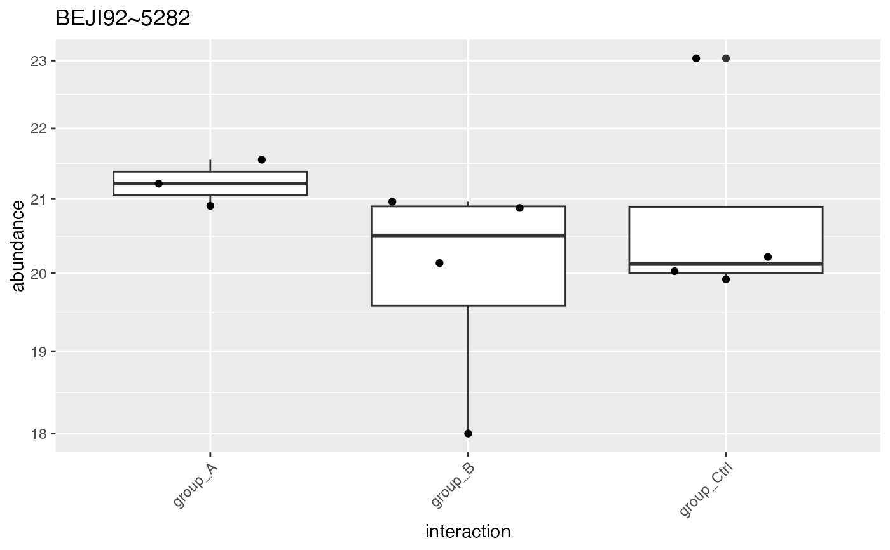
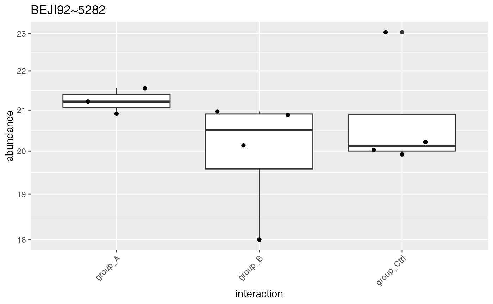

generates peptide level plots for all Proteins
Source:R/tidyMS_plotting.R
plot_hierarchies_boxplot_df.Rdgenerates peptide level plots for all Proteins
plot_hierarchies_boxplot_df(
pdata,
config,
hierarchy = config$table$hierarchy_keys_depth(),
facet_grid_on = NULL
)Arguments
- pdata
data.frame
- config
AnalysisConfiguration
- facet_grid_on
default NULL
- hiearchy
e.g. protein_Id default hierarchy_keys_depth
See also
Other plotting:
ContrastsPlotter,
INTERNAL_FUNCTIONS_BY_FAMILY,
UpSet_interaction_missing_stats(),
UpSet_missing_stats(),
medpolish_estimate_df(),
missigness_histogram(),
missingness_per_condition_cumsum(),
missingness_per_condition(),
plot_NA_heatmap(),
plot_estimate(),
plot_heatmap_cor(),
plot_heatmap(),
plot_hierarchies_add_quantline(),
plot_hierarchies_line_df(),
plot_hierarchies_line(),
plot_intensity_distribution_violin(),
plot_pca(),
plot_raster(),
plot_sample_correlation(),
plot_screeplot()
Examples
iostar <- prolfqua_data('data_ionstar')$filtered()
#> Column added : nr_peptide_Id_IN_protein_Id
iostar$config <- old2new(iostar$config)
iostar$data <- iostar$data |>
dplyr::filter(protein_Id %in% sample(protein_Id, 2))
unique(iostar$data$protein_Id)
#> [1] "sp|Q14764|MVP_HUMAN~2856~Q14764" "sp|O95373|IPO7_HUMAN~600~O95373"
res <- plot_hierarchies_boxplot_df(iostar$data,iostar$config)
res$boxplot[[1]]
#> Warning: Removed 62 rows containing non-finite values (`stat_boxplot()`).
#> Warning: Removed 62 rows containing missing values (`position_quasirandom()`).
 res <- plot_hierarchies_boxplot_df(iostar$data,iostar$config,iostar$config$table$hierarchy_keys()[1])
res$boxplot[[1]]
#> Warning: Removed 62 rows containing non-finite values (`stat_boxplot()`).
#> Warning: Removed 62 rows containing missing values (`position_quasirandom()`).
res <- plot_hierarchies_boxplot_df(iostar$data,iostar$config,iostar$config$table$hierarchy_keys()[1])
res$boxplot[[1]]
#> Warning: Removed 62 rows containing non-finite values (`stat_boxplot()`).
#> Warning: Removed 62 rows containing missing values (`position_quasirandom()`).
 res <- plot_hierarchies_boxplot_df(iostar$data,iostar$config,
iostar$config$table$hierarchy_keys()[1],
facet_grid_on = iostar$config$table$hierarchy_keys()[2])
res$boxplot[[1]]
#> Warning: Removed 62 rows containing non-finite values (`stat_boxplot()`).
#> Warning: Removed 62 rows containing missing values (`position_quasirandom()`).
res <- plot_hierarchies_boxplot_df(iostar$data,iostar$config,
iostar$config$table$hierarchy_keys()[1],
facet_grid_on = iostar$config$table$hierarchy_keys()[2])
res$boxplot[[1]]
#> Warning: Removed 62 rows containing non-finite values (`stat_boxplot()`).
#> Warning: Removed 62 rows containing missing values (`position_quasirandom()`).
 bb <- prolfqua_data('data_IonstarProtein_subsetNorm')
iostar <- LFQData$new(bb$data, old2new(bb$config))
iostar$data <- iostar$data |>
dplyr::filter(protein_Id %in% sample(protein_Id, 100))
unique(iostar$data$protein_Id)
#> [1] "sp|P21589|5NTD_HUMAN~1527~P21589" "sp|Q6UX04|CWC27_HUMAN~3241~Q6UX04"
#> [3] "sp|P62857|RS28_HUMAN~2351~P62857" "sp|Q13217|DNJC3_HUMAN~2710~Q13217"
#> [5] "sp|P46100|ATRX_HUMAN~1971~P46100" "sp|P0AC84|GLO2_ECOLI~1143~P0AC84"
#> [7] "sp|P01889|HLAB_HUMAN~692~P01889" "sp|O00148|DX39A_HUMAN~156~O00148"
#> [9] "sp|P07602|SAP_HUMAN~814~P07602" "sp|Q07866|KLC1_HUMAN~2617~Q07866"
#> [11] "sp|P41252|SYIC_HUMAN~1922~P41252" "sp|P20042|IF2B_HUMAN~1495~P20042"
#> [13] "sp|Q86UY8|NT5D3_HUMAN~3351~Q86UY8" "sp|Q15036|SNX17_HUMAN~2886~Q15036"
#> [15] "sp|P02924|ARAF_ECOLI~705~P02924" "sp|Q58FF8|H90B2_HUMAN~3080~Q58FF8"
#> [17] "sp|Q96KG9|SCYL1_HUMAN~3853~Q96KG9" "sp|Q9UBI1|COMD3_HUMAN~4592~Q9UBI1"
#> [19] "sp|Q6P1J9|CDC73_HUMAN~3199~Q6P1J9" "sp|Q6P3X3|TTC27_HUMAN~3209~Q6P3X3"
#> [21] "sp|P00505|AATM_HUMAN~667~P00505" "sp|Q96T58|MINT_HUMAN~3916~Q96T58"
#> [23] "sp|P77213|GCS2_ECOLI~2467~P77213" "sp|P46934|NEDD4_HUMAN~1988~P46934"
#> [25] "sp|Q8N556|AFAP1_HUMAN~3472~Q8N556" "sp|Q8NBS9|TXND5_HUMAN~3509~Q8NBS9"
#> [27] "sp|P69411|RCSF_ECOLI~2424~P69411" "sp|Q969X6|UTP4_HUMAN~3720~Q969X6"
#> [29] "sp|P22564|RIHC_ECOLI~1551~P22564" "sp|Q99873|ANM1_HUMAN~3969~Q99873"
#> [31] "sp|P0AED0|USPA_ECOLI~1208~P0AED0" "sp|Q9Y3C8|UFC1_HUMAN~4838~Q9Y3C8"
#> [33] "sp|Q15813|TBCE_HUMAN~2967~Q15813" "sp|Q9BY44|EIF2A_HUMAN~4119~Q9BY44"
#> [35] "sp|Q96T51|RUFY1_HUMAN~3915~Q96T51" "sp|P0C054|IBPA_ECOLI~1297~P0C054"
#> [37] "sp|P31943|HNRH1_HUMAN~1750~P31943" "sp|Q9UNE7|CHIP_HUMAN~4732~Q9UNE7"
#> [39] "sp|Q9H2G2|SLK_HUMAN~4222~Q9H2G2" "sp|O15511|ARPC5_HUMAN~313~O15511"
#> [41] "sp|P35613|BASI_HUMAN~1814~P35613" "sp|P0ADS6|YGGE_ECOLI~1188~P0ADS6"
#> [43] "sp|P08238|HS90B_HUMAN~837~P08238" "sp|P80723|BASP1_HUMAN~2497~P80723"
#> [45] "sp|Q14764|MVP_HUMAN~2856~Q14764" "sp|P76145|TAM_ECOLI~2453~P76145"
#> [47] "sp|P0AG80|UGPB_ECOLI~1279~P0AG80" "sp|P48449|ERG7_HUMAN~2006~P48449"
#> [49] "sp|Q9H223|EHD4_HUMAN~4215~Q9H223" "sp|Q14160|SCRIB_HUMAN~2814~Q14160"
#> [51] "sp|P46087|NOP2_HUMAN~1970~P46087" "sp|Q9UN86|G3BP2_HUMAN~4731~Q9UN86"
#> [53] "sp|P0AGJ9|SYY_ECOLI~1293~P0AGJ9" "sp|P28062|PSB8_HUMAN~1657~P28062"
#> [55] "sp|O95373|IPO7_HUMAN~600~O95373" "sp|P18754|RCC1_HUMAN~1475~P18754"
#> [57] "sp|Q567U6|CCD93_HUMAN~3076~Q567U6" "sp|P23229|ITA6_HUMAN~1560~P23229"
#> [59] "sp|P25516|ACNA_ECOLI~1604~P25516" "sp|P68133|ACTS_HUMAN~2407~P68133"
#> [61] "sp|Q8WX92|NELFB_HUMAN~3628~Q8WX92" "sp|P20810|ICAL_HUMAN~1506~P20810"
#> [63] "sp|Q13162|PRDX4_HUMAN~2704~Q13162" "sp|Q13131|AAPK1_HUMAN~2695~Q13131"
#> [65] "sp|P0A7R9|RS11_ECOLI~974~P0A7R9" "sp|P05042|FUMC_ECOLI~749~P05042"
#> [67] "sp|Q07021|C1QBP_HUMAN~2611~Q07021" "sp|Q9UJW0|DCTN4_HUMAN~4671~Q9UJW0"
#> [69] "sp|O60220|TIM8A_HUMAN~391~O60220" "sp|P15144|AMPN_HUMAN~1409~P15144"
#> [71] "sp|Q92620|PRP16_HUMAN~3664~Q92620" "sp|P30533|AMRP_HUMAN~1714~P30533"
#> [73] "sp|P47985|UCRI_HUMAN~1999~P47985" "sp|Q96H79|ZCCHL_HUMAN~3813~Q96H79"
#> [75] "sp|Q8N6R0|EFNMT_HUMAN~3486~Q8N6R0" "sp|Q5VYK3|ECM29_HUMAN~3147~Q5VYK3"
#> [77] "sp|P49821|NDUV1_HUMAN~2067~P49821"
res <- plot_hierarchies_boxplot_df(iostar$data,iostar$config)
res$boxplot[[1]]
bb <- prolfqua_data('data_IonstarProtein_subsetNorm')
iostar <- LFQData$new(bb$data, old2new(bb$config))
iostar$data <- iostar$data |>
dplyr::filter(protein_Id %in% sample(protein_Id, 100))
unique(iostar$data$protein_Id)
#> [1] "sp|P21589|5NTD_HUMAN~1527~P21589" "sp|Q6UX04|CWC27_HUMAN~3241~Q6UX04"
#> [3] "sp|P62857|RS28_HUMAN~2351~P62857" "sp|Q13217|DNJC3_HUMAN~2710~Q13217"
#> [5] "sp|P46100|ATRX_HUMAN~1971~P46100" "sp|P0AC84|GLO2_ECOLI~1143~P0AC84"
#> [7] "sp|P01889|HLAB_HUMAN~692~P01889" "sp|O00148|DX39A_HUMAN~156~O00148"
#> [9] "sp|P07602|SAP_HUMAN~814~P07602" "sp|Q07866|KLC1_HUMAN~2617~Q07866"
#> [11] "sp|P41252|SYIC_HUMAN~1922~P41252" "sp|P20042|IF2B_HUMAN~1495~P20042"
#> [13] "sp|Q86UY8|NT5D3_HUMAN~3351~Q86UY8" "sp|Q15036|SNX17_HUMAN~2886~Q15036"
#> [15] "sp|P02924|ARAF_ECOLI~705~P02924" "sp|Q58FF8|H90B2_HUMAN~3080~Q58FF8"
#> [17] "sp|Q96KG9|SCYL1_HUMAN~3853~Q96KG9" "sp|Q9UBI1|COMD3_HUMAN~4592~Q9UBI1"
#> [19] "sp|Q6P1J9|CDC73_HUMAN~3199~Q6P1J9" "sp|Q6P3X3|TTC27_HUMAN~3209~Q6P3X3"
#> [21] "sp|P00505|AATM_HUMAN~667~P00505" "sp|Q96T58|MINT_HUMAN~3916~Q96T58"
#> [23] "sp|P77213|GCS2_ECOLI~2467~P77213" "sp|P46934|NEDD4_HUMAN~1988~P46934"
#> [25] "sp|Q8N556|AFAP1_HUMAN~3472~Q8N556" "sp|Q8NBS9|TXND5_HUMAN~3509~Q8NBS9"
#> [27] "sp|P69411|RCSF_ECOLI~2424~P69411" "sp|Q969X6|UTP4_HUMAN~3720~Q969X6"
#> [29] "sp|P22564|RIHC_ECOLI~1551~P22564" "sp|Q99873|ANM1_HUMAN~3969~Q99873"
#> [31] "sp|P0AED0|USPA_ECOLI~1208~P0AED0" "sp|Q9Y3C8|UFC1_HUMAN~4838~Q9Y3C8"
#> [33] "sp|Q15813|TBCE_HUMAN~2967~Q15813" "sp|Q9BY44|EIF2A_HUMAN~4119~Q9BY44"
#> [35] "sp|Q96T51|RUFY1_HUMAN~3915~Q96T51" "sp|P0C054|IBPA_ECOLI~1297~P0C054"
#> [37] "sp|P31943|HNRH1_HUMAN~1750~P31943" "sp|Q9UNE7|CHIP_HUMAN~4732~Q9UNE7"
#> [39] "sp|Q9H2G2|SLK_HUMAN~4222~Q9H2G2" "sp|O15511|ARPC5_HUMAN~313~O15511"
#> [41] "sp|P35613|BASI_HUMAN~1814~P35613" "sp|P0ADS6|YGGE_ECOLI~1188~P0ADS6"
#> [43] "sp|P08238|HS90B_HUMAN~837~P08238" "sp|P80723|BASP1_HUMAN~2497~P80723"
#> [45] "sp|Q14764|MVP_HUMAN~2856~Q14764" "sp|P76145|TAM_ECOLI~2453~P76145"
#> [47] "sp|P0AG80|UGPB_ECOLI~1279~P0AG80" "sp|P48449|ERG7_HUMAN~2006~P48449"
#> [49] "sp|Q9H223|EHD4_HUMAN~4215~Q9H223" "sp|Q14160|SCRIB_HUMAN~2814~Q14160"
#> [51] "sp|P46087|NOP2_HUMAN~1970~P46087" "sp|Q9UN86|G3BP2_HUMAN~4731~Q9UN86"
#> [53] "sp|P0AGJ9|SYY_ECOLI~1293~P0AGJ9" "sp|P28062|PSB8_HUMAN~1657~P28062"
#> [55] "sp|O95373|IPO7_HUMAN~600~O95373" "sp|P18754|RCC1_HUMAN~1475~P18754"
#> [57] "sp|Q567U6|CCD93_HUMAN~3076~Q567U6" "sp|P23229|ITA6_HUMAN~1560~P23229"
#> [59] "sp|P25516|ACNA_ECOLI~1604~P25516" "sp|P68133|ACTS_HUMAN~2407~P68133"
#> [61] "sp|Q8WX92|NELFB_HUMAN~3628~Q8WX92" "sp|P20810|ICAL_HUMAN~1506~P20810"
#> [63] "sp|Q13162|PRDX4_HUMAN~2704~Q13162" "sp|Q13131|AAPK1_HUMAN~2695~Q13131"
#> [65] "sp|P0A7R9|RS11_ECOLI~974~P0A7R9" "sp|P05042|FUMC_ECOLI~749~P05042"
#> [67] "sp|Q07021|C1QBP_HUMAN~2611~Q07021" "sp|Q9UJW0|DCTN4_HUMAN~4671~Q9UJW0"
#> [69] "sp|O60220|TIM8A_HUMAN~391~O60220" "sp|P15144|AMPN_HUMAN~1409~P15144"
#> [71] "sp|Q92620|PRP16_HUMAN~3664~Q92620" "sp|P30533|AMRP_HUMAN~1714~P30533"
#> [73] "sp|P47985|UCRI_HUMAN~1999~P47985" "sp|Q96H79|ZCCHL_HUMAN~3813~Q96H79"
#> [75] "sp|Q8N6R0|EFNMT_HUMAN~3486~Q8N6R0" "sp|Q5VYK3|ECM29_HUMAN~3147~Q5VYK3"
#> [77] "sp|P49821|NDUV1_HUMAN~2067~P49821"
res <- plot_hierarchies_boxplot_df(iostar$data,iostar$config)
res$boxplot[[1]]
 res <- plot_hierarchies_boxplot_df(iostar$data,iostar$config,
iostar$config$table$hierarchy_keys()[1])
res$boxplot[[1]]

res <- plot_hierarchies_boxplot_df(iostar$data,iostar$config,
iostar$config$table$hierarchy_keys()[1],
facet_grid_on = iostar$config$table$hierarchy_keys()[2])
res$boxplot[[1]]
res <- plot_hierarchies_boxplot_df(iostar$data,iostar$config,
iostar$config$table$hierarchy_keys()[1])
res$boxplot[[1]]

res <- plot_hierarchies_boxplot_df(iostar$data,iostar$config,
iostar$config$table$hierarchy_keys()[1],
facet_grid_on = iostar$config$table$hierarchy_keys()[2])
res$boxplot[[1]]